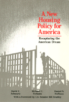

<body bgcolor="#FFFFFF" text="#000000" link="#0000FF" vlink="#CC0000" alink="#CC0000"><center><hr width="350" size="1" align="center" noshade>A comprehensive, innovative, and largely self-financing plan to meet America’s housing needs in the 1990s<hr width="350" size="1" align="center" noshade><p><a href="https://cdcshoppingcart.uchicago.edu/Cart/ChicagoBook.aspx?ISBN=9780877225676&&PRESS=temple" target="_top">Buy this book!</a> | <a href="https://cdcshoppingcart.uchicago.edu/Cart/Cart.aspx?PRESS=temple" target="_top">View Cart</a> | <a href="https://cdcshoppingcart.uchicago.edu/Cart/Cart.aspx?PRESS=temple" target="_top">Check Out</a></p><p></p></center><!--none//--><h1>A New Housing Policy for America</h1>
<H2>Recapturing the American Dream</H2>
<h3>David C. Schwartz, Richard C. Ferlauto and Daniel N. Hoffman, foreword by Bill Bradley</h3>
<P>cloth 0-87722-567-2 $54.50, Jun 88, <FONT COLOR=#990033>Out of Stock Unavailable</FONT>
<br>paper 0-87722-568-0 $27.95, Jun 88, <FONT COLOR=#990033>Out of Stock Unavailable</FONT>
<BR> 288 pp
</P><BLOCKQUOTE><I>"A wide-ranging, primarily self-financing plan to meet America's housing needs in the 1990s is proposed."</I>
<br>&#151<b><I>Sage Urban Studies Abstracts</I></b><I></I></BLOCKQUOTE>
<p>This book proposes a comprehensive, innovative, and largely self-financing plan to meet America’s housing needs in the 1990s. Showing how current housing policies and housing needs are diametrically opposed, the authors analyze more than two hundred new state, national and international housing efforts to derive a plan that will meet the challenge of U.S. housing and demographic trends in the 1990s.
<p>Projecting the special needs of young families, single-parent families, and low- and moderate-income families in the 1990s David Schwartz, Richard Ferlauto, and Daniel Hoffman propose new roles for non-profit organizations and employers. Their new plan advocates a federal down payment assistance loan program, a lease purchase home-buying program, an employer-assisted homeownership plan, a mortgage interest rate buydown fund, shared-equity mortgages, a new National Housing Investment Corporation, and a Federal Housing Trust Fund to construct needed rental units. In addition, special programs are suggested to provide housing help to elderly people, single-parent families, and the homeless.
<BR>&nbsp;<h2>Reviews</h2>
<p><I>"The best discussion I have seen on the political and economic bases for housing solutions, it shows a cost-effective means of dealing with homelessness and the housing needs of the elderly, single parents, and other housing-poor groups."</I>
<br>&#151<b>Julian Wolpert</b>, Princeton University
<p><I>"A compelling case for housing construction as the centerpiece of economic development strategies in urban America. The innovative programs advocated here...are today’s tools for social justice."</I>
<br>&#151<b>M. Carl Holman</b>, President, National Urban Coalition
<p><I>"This book will help put housing back on the nation’s agenda.... It should be read by mayors, business leaders, and housing advocates interested in making housing a federal priority once again."</I>
<br>&#151<b>Raymond Flynn</b>, Mayor of Boston
<BR>&nbsp;<H2>About the Author(s)</H2>
<P><b>David C. Schwartz</b> is Professor of Political Science at Rutgers University and a member of the New Jersey General Assembly.</P>
<P><b>Richard C. Ferlauto</b> is a community organizer and legislative analyst who concentrates on housing and community economic development issues.</P>
<P><b>Daniel N. Hoffman</b> is a consultant on housing and urban economic development with The Atlantic Group in New Jersey.</P>
<BR><H2>Subject Categories</H2>
<p><A HREF="/tempress/urban.html" TARGET="_top">Urban Studies</a>
<BR><A HREF="/tempress/sociology.html" TARGET="_top">Sociology</a>
</p>
<p align="center"><a href="https://cdcshoppingcart.uchicago.edu/Cart/ChicagoBook.aspx?ISBN=9780877225676&&PRESS=temple" target="_top">Buy this book!</a> | <a href="https://cdcshoppingcart.uchicago.edu/Cart/Cart.aspx?PRESS=temple" target="_top">View Cart</a> | <a href="https://cdcshoppingcart.uchicago.edu/Cart/Cart.aspx?PRESS=temple" target="_top">Check Out</a></p><p><font face="Arial" size="1"><a href="copyright.html" onMouseOver="window.status='Web Copyright Policy';return true;" onMouseOut="window.status=''" title="Web Copyright Policy">&copy;</a> 2015 <a href="http://www.temple.edu" target="new" onMouseOver="window.status='Link to Temple University home page';return true;" onMouseOut="window.status=''" title="Link to Temple University home page">Temple University</a>. All Rights Reserved. http://www.temple.edu/tempress/titles/594_reg.html</font></p>